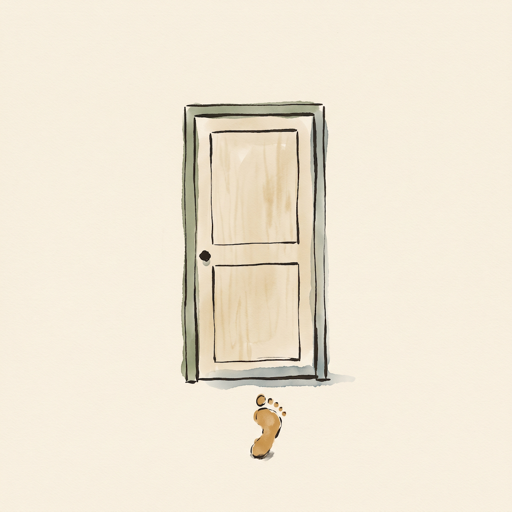

No streaks, ever
Onward will never count your days in a row. This is a promise, not a setting.
What we will not build
No streak counts and no broken-streak warnings. No red dots, badges, points, levels or leaderboards. Nothing that turns a missed day into a loss.
Why
A streak makes the count the thing you protect. The day you miss it, the count is gone, and it can take the commitment with it. Onward holds something larger than a count: the one thing you set out to walk toward.
A missed day is not a moral event. It is part of the path.
What happens instead
The path waits. Onward counts walking days in total, never days in a row, and the twelve places arrive by that total: the first after thirty walking days, whenever they fall.
When you come back after quiet days, Onward shows you your own words, written on the day you began. It does not scold and it does not cheer.
And it stays quiet
Onward sends one reminder a day, only if you ask for it, in your own words if you wish. It sends no other notifications.
Onward
A quiet iPhone app for one long commitment. Free to walk for as long as you walk; one purchase, made once, opens the eleven places after the first, for every journey. No subscription. No account. Everything you write is encrypted on your phone.
For iPhone, iOS 17 or later.
Questions about streaks in Onward
Does Onward have streaks?
No. Onward never counts days in a row. It counts walking days in total, and the twelve places arrive by that total, the first after thirty walking days.
What happens when I miss a day?
The path waits. When you come back after quiet days, Onward shows you your own words from the day you began. It does not scold.
How does Onward show progress without streaks?
A path is drawn behind you with each step, and the twelve places along it arrive by your total walking days.
Last updated: 26 November 2026